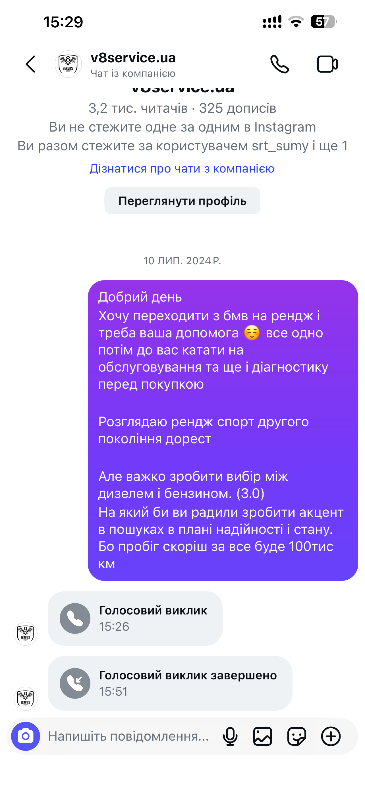

Вибір СТО, отримання інформації для підбору
Довго вивчав цю модель — переглянув багато відео на YouTube. Найбільше зачепив огляд цієї машини від SRT, після якого я остаточно визначився.
Живу в Києві, тож зрадів, коли натрапив на СТО V8 Service. Написав їм в Instagram, щоб уточнити кілька моментів перед пошуком.
Мені зателефонували — вийшов класний, відкритий діалог. Порадили не користуватись автопідбором, а самому поїздити містом, знайти варіанти й привозити авто до них на діагностику. Техніку вони передивляться повністю; кузовними роботами не займаються.

Листування з V8 Service · Instagram · натисніть, щоб відкрити